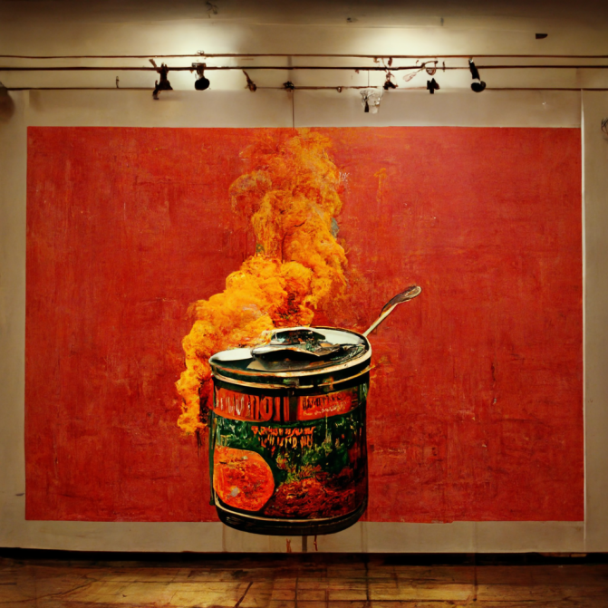

祝祭と霽れ
価値の在り方
種村 朋洋
AIアートとは、どれほどの価値を持つのだろうか？アートの価値を図る時、アートを破壊する時に、その価値を測ることは可能だろうか？そして、
アートを破壊することは、どれほどの価値を持つだろうか？
この展示は、アートを破壊する行為を通して、アートと人間の間にある価値を再認識するものである。
アートを破壊することは、どれほどの価値を持つだろうか？
この展示は、アートを破壊する行為を通して、アートと人間の間にある価値を再認識するものである。